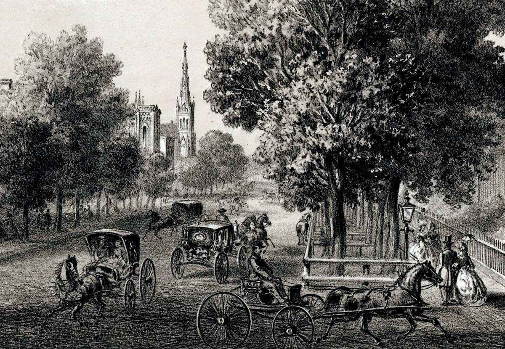

Tour Neighborhood Churches
See how Chicago’s magnificent churches rival those in Europe.
Wabash Avenue Methodist Church
-
Wabash Avenue Methodist Church
This handsome church stands at the northwest corner of Wabash Avenue and Harrison Street in a comfortable residential area just south of the central business district. After Sunday church services, residents can be seen taking a leisurely stroll or carriage ride.
iChi-63096
-
Church
This church, designed by Chicago architect William W. Boyington, was completed just before the Financial Panic of 1857, leaving the congregation deeply in debt. Its members, however, are making great strides in paying it off.
iChi-63097
-

Residential area
An increasing number of Chicagoans are choosing to move away from the congested central city to more comfortable residential areas, like this, with tree-lined streets.
iChi-63098
Church of the Holy Family
-
Church of the Holy Family
Completed in 1860, Holy Family is located at Twelfth and May Streets on the West Side. It serves a large community of Irish Catholics with daily and Sunday worship services and operates separate schools for boys and girls.
iChi-63099
-
Holy Family
Father Arnold Damen, a member of the Jesuit order, leads Holy Family, Chicago’s largest congregation. The church is enormous—eighty-five-feet across and two-hundred-feet deep.
iChi-63100
-
Irish Catholics
During the 1840s and 1850s, thousands of poor Irish immigrants arrived in Chicago. They faced discrimination but worked hard to succeed. With countless small donations, they built the Church of the Holy Family.
iChi-63101
North Presbyterian Church
-
North Presbyterian Church
This stately church, designed by William W. Boyington and built in 1861, is located on the South Side at the corner of Cass and Indiana Streets. Its soaring Gothic tower can be seen for miles.
iChi-63102
-
South Side
This area of Chicago is growing rapidly. With spacious lots and tree-lined streets, it is a very pleasant place to live.
iChi-63103
-
Tower
Together, the church’s main tower and octagonal spire measure 194 feet. During the Civil War, some members with strong antislavery views broke away to form the Central Presbyterian Church.
iChi-63104